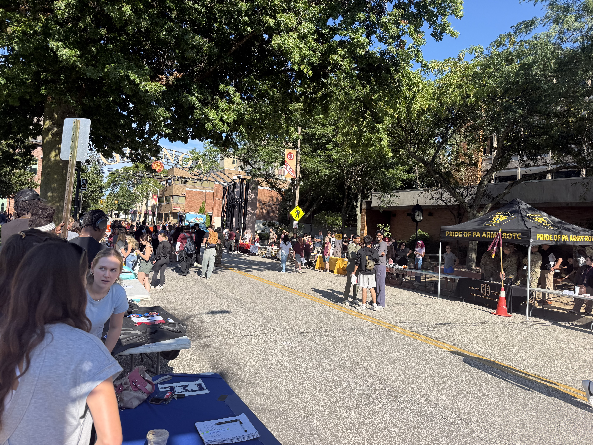
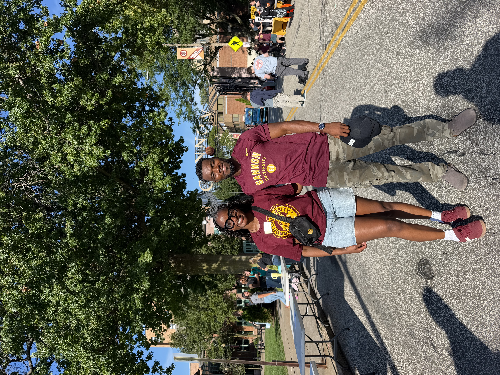

Gannon Hacks tabled at the IgKnight Fair on Tuesday, August 25, and it was one of the better afternoons we've had as a club. If you stopped by, thanks — this post is for you.
What we kept telling people

One question came up over and over: what does a cybersecurity club actually do?
We train on both sides. Red team — finding the way in, thinking like an attacker, breaking systems ethically. Blue team — defending, detecting, responding when something goes wrong. Most members lean one way, but everyone gets exposure to both, because you can't defend what you don't understand how to attack.
At the table with me were Pratham, Jeanalex, Baraa, and several other members. Hearing about the club from people actually doing the work beats a pitch from the president.
What got people interested

- The hands-on part. Live challenges — Linux fundamentals, cryptography, web exploitation — on our own platform at ctf.gannonhacks.club, with beginner tracks you can start on day one.
- The competitions. Our team put up a strong showing at BSidesROC 2026, and yes, travelling out of state for CTFs and conferences is a real part of what we do.
- The momentum. Join this semester and you're not joining something already built — you're helping build it.
You don't need experience
The most common hesitation we heard was some version of "I don't really know anything about this yet." Neither did any of us. You don't need to code, hold a certification, or have done anything in high school. You need curiosity and a willingness to be confused for a few weeks. That's the whole entry requirement.
Come find us
Missed us? Reach out through our contact page or jump straight into the challenges at ctf.gannonhacks.club.
Learn. Compete. Build. Break things ethically.
Abraham Klogo (AB)
President, Gannon Hacks Cyber Club